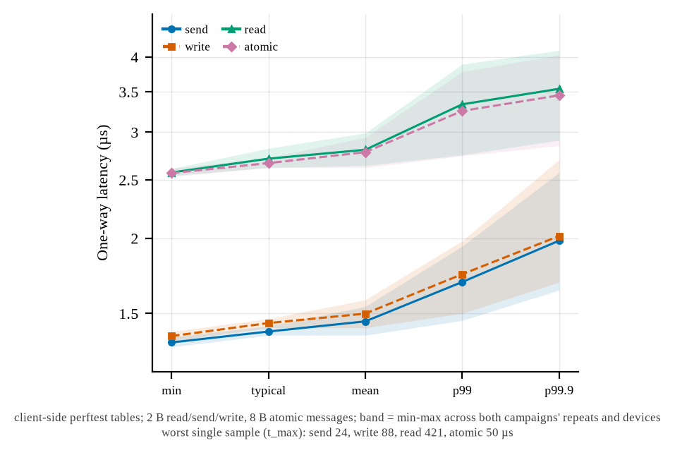
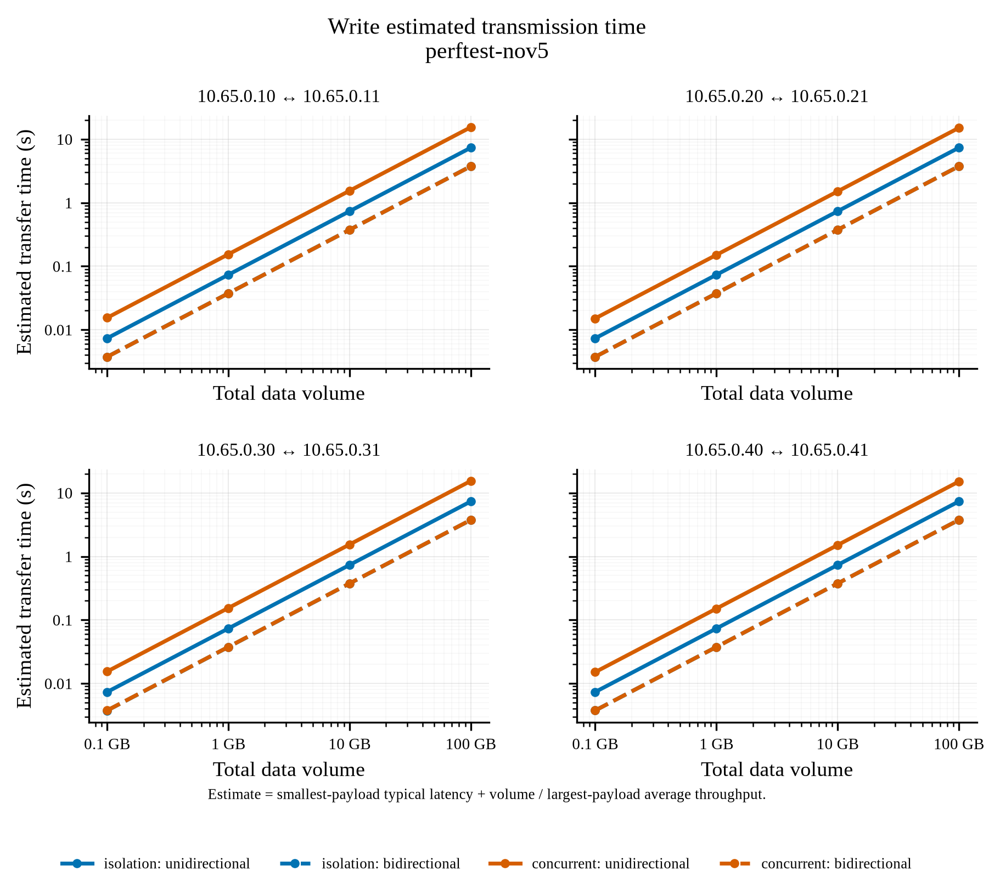
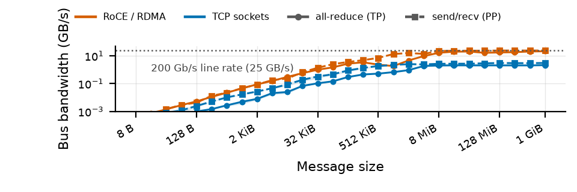
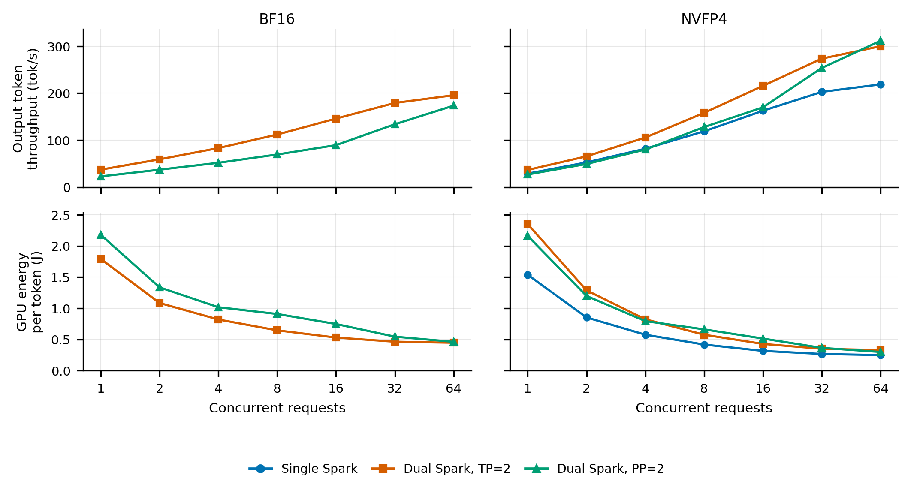
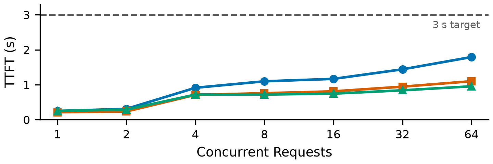
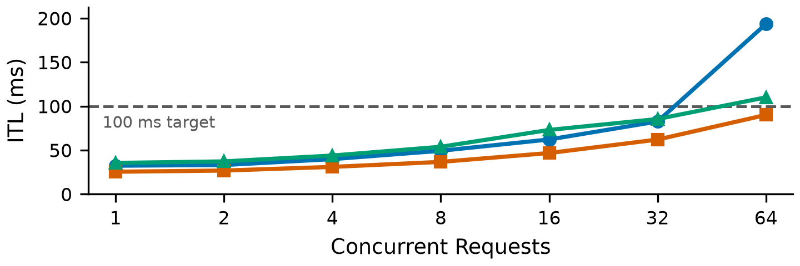
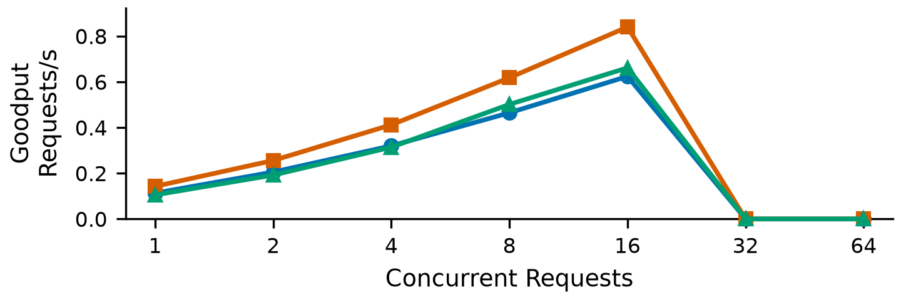

Distributed LLM inference
NVIDIA DGX Spark · GB10
How can a relatively affordable desktop platform support a compute cluster, and what challenges emerge when scaling a new architecture?
Daniel Mihovch
Can desktop-class nodes add useful model capacity?
Research question: can inter-node communication stay within interactive latency and goodput targets?
Why DGX Spark for an FP4 compute cluster?
GB10 provides 128 GB of unified memory in a compact desktop. The GB300 DGX Station is NVIDIA's larger deskside FP4 platform.
| Specification | DGX Spark · GB10 | DGX Station · GB300 |
|---|---|---|
| Coherent memory | 128 GB | 748 GB |
| Memory bandwidth | 273 GB/s · LPDDR5X | 7.1 TB/s · GPU HBM3e 396 GB/s · CPU LPDDR5X |
| Peak sparse FP4 | Up to 1 PFLOP | Up to 20 PFLOPS |
| Physical format | 150 × 150 × 50.5 mm desktop | Workstation tower; OEM-dependent |
Planning estimate: one Station costs about 18–20 Sparks. Spark is the lower-cost node for studying scale-out.
Station memory: 252 GB HBM3e + 496 GB LPDDR5X. Prices are the lab planning estimate from the revision brief; the ratio is not a cited vendor quote. Published peak specifications are not measured application performance. Sources: NVIDIA Spark specifications; NVIDIA Station development guide.
Two-node groundwork for 10-, 20-, and 30-node research
The two-node testbed evaluates communication limits and serving reliability before larger cluster studies.
This preliminary work establishes viability criteria for 10-, 20-, and 30-node research targets. Those topologies remain planned.
Each Spark has two ports and four logical RoCE devices
Two cables expose all four interfaces for network-heavy inter-node communication. They do not remove the shared host-link limit.
Research question: does using all four interfaces improve sustained bandwidth? No conclusion is reported for this study.
Topology: NVIDIA ConnectX-7 networking guide. Logical device numbers are schematic labels.
Component bandwidth sets the limits to investigate
Measure one interface, then all four together. Component ratings do not establish sustained application bandwidth.
Memory and port ratings: NVIDIA Spark specifications and networking guide. PCIe: retained kernel report, 126.028 Gb/s per ×4 link; combined value is derived. Rates are per direction.
A pairwise suite measures the fabric independently
I built the orchestration and evidence capture around the linux-rdma/perftest InfiniBand verbs microbenchmarks, run here over RoCE.
Deliver a message into a receive buffer posted by the peer.
Push bytes directly into the peer's registered memory.
Pull bytes directly from the peer's registered memory.
Isolated: one logical device runs at a time.
Concurrent: all four devices run the same test simultaneously.
The suite records peer mappings, commands, raw logs, CSV results, and link/PCIe metadata.
T (s) = L (s) + V (GB) / B (GB/s)
L: smallest-payload typical latency.
B: largest-payload average throughput.
V: 0.1, 1, 10, or 100 decimal GB.
The estimate is computed per run, device, verb, and mode. Plots show the median and 10th–90th percentile across runs. It excludes process setup and teardown. Method: local suite plot_perftest.py. Commands: ib_{send,write,read}_{lat,bw}.
PerfTest: large transfers approach a per-interface limit

Each logical interface is below the 200 Gb/s physical-port rating.
The plotted runs test one interface at a time. Four simultaneous rails are a separate condition.
PerfTest: short messages expose the latency floor

µs
Small messages reveal the delay paid on each cross-node exchange.
This plot measures pairwise verbs operations, not end-to-end token latency.
PerfTest estimates fixed-volume transfer time

The suite combines small-message latency with large-message bandwidth to estimate transfer time.
The estimate is a model of the data phase. It is not a measured process wall time.
The four panels retain each device's isolation and concurrent modes.
Tensor and pipeline parallelism communicate differently
Tensor parallelism
Layer weights remain sharded across nodes.
Collectives within each layer
Pipeline parallelism
Each node holds complete layers in one stage.
Activation transfer at stage boundaries
Conceptual communication pattern. TP can also use reduce-scatter/all-gather; the sequence depends on the model and implementation. NVIDIA Megatron Core reference.
vLLM serves; Ray places workers; NCCL moves tensors
Ray coordinates distributed workers. The workers perform model execution and communicate through NCCL.
Historical NCCL measurements compare sockets and RoCEv2

Socket transport uses TCP/IP. RoCEv2 uses RDMA verbs over UDP/IP on Ethernet.
Historical campaigns show different NCCL bandwidth. A controlled comparison is required to quantify the transport contribution.
RoCEv2 offloads data movement on a local Ethernet path
RDMA benefits without IP routing
The NIC moves data between registered buffers, bypassing the host kernel network data path.
This reduces CPU processing and avoids socket-path copies. Routing is an additional capability.
RoCEv2 provides congestion feedback. PFC is a separate Ethernet priority control.
Architecture: NVIDIA RoCE guide. Congestion: NVIDIA Cumulus RoCE guide. Mechanisms do not establish this testbed's measured speedup or enabled congestion settings.
Jumbo frames are already configured
Configured host network MTU
Active and maximum verbs MTU
The values apply to different protocol layers. A 4096 B RDMA MTU does not mean Ethernet jumbo frames are disabled.
Saved device: rocep1s0f0, trans-test-update/client/run-001, link.json and ibv_devinfo.txt. No MTU performance gain is claimed.
Qwen3-Next 80B-A3B: precision and model placement

Qwen3-Next 80B-A3B, comparing BF16 and NVFP4 in the retained RoCE pilot.
Weight format, compute dtype, and KV-cache dtype are distinct. Model fit also depends on context and scheduler memory.
GPU energy per output token sums participating nodes and excludes whole-system power.
Serving quality is a request-level measurement
RoCE pilot: first-token timing by concurrency

Qwen3-Next 80B NVFP4. All plotted median TTFT values stay below the 3 s target. Goodput still qualifies individual requests.
RoCE pilot: inter-token timing by concurrency

Qwen3-Next 80B NVFP4. At concurrency 32, pooled median ITL stays below 100 ms while goodput is zero. Goodput tests mean ITL per request.
RoCE pilot: goodput depends on load and parallelism

In this pilot, goodput peaks at concurrency 16 and is zero at 32 and 64.
Qwen3-Next 80B NVFP4. One retained pilot point per configuration and load. No general parallelism ranking follows.
Reported failure: cleanup overlapped serving shutdown
A stop request did not establish that vLLM had exited before cache cleanup began.
Serving shutdown and cache mutation overlapped in the reported incident.
User-reported chronology. Timing is schematic; the exact historical file operation and crash mechanism are unverified.
Safeguard: lock shared resources and confirm idleness
An exclusive resource lock prevents competing lifecycle operations. The purge also requires idle resources.
If shutdown or the idle check fails, cleanup stops before removal.
Current implementation: connectx_env.sh, run_job.sh, purge_model_cache.sh. The default lock is host-local.
Scaling decisions require fabric, serving, and reliability evidence
Latency, bandwidth, transport selected, and concurrent rails.
TTFT, ITL, and goodput for a declared model and workload.
Logs, lifecycle state, recovery, and provenance.
Next controlled test: hold model, topology, workload, and runtime fixed while changing the NCCL transport.
Next steps: validate the switched pair, then expand
Current switched pair, as reported by the research team.
Validate repeatability, fabric behavior, and serving reliability. If results are reliable, join the standalone pair to the switched pair.
Solid links: current pair. Dashed links: proposed expansion. The switch rating does not raise a Spark port's up-to-200-Gb/s rating.
Thank you
Questions?